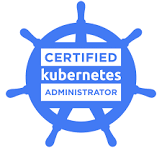
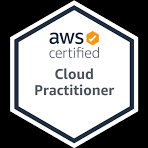

Leading platform operations, production stability, application deployment automation and cross-functional delivery.
9+ Years
DevOps engineering, infrastructure administration, Linux/UNIX and Windows environments
DevOps Lead
MedPlus Health Services — Feb 2026 to Present
B.Tech (CSE)
R.V.R & J.C College of Engineering — 2017, Score: 8.42
Leading DevOps and infrastructure operations, Kubernetes platform, AWS automation with Terraform, and CI/CD pipelines across multiple environments.
Managed containerized deployments, infrastructure automation, monitoring and production stability across development and production environments.
Handled application deployment automation, configuration management, server administration and operational tooling improvements.
Supported infrastructure operations, scripting automation, web server management and application deployment activities.
Started career in infrastructure and operations, building foundational skills in Linux/UNIX systems, scripting and server administration.
Cloud infrastructure & services
Container orchestration & cluster operations
Containerization
CI/CD pipelines & release management
Configuration management & automation
Job automation & recurring operations
Ubuntu, CentOS & system administration
Web servers & reverse proxy
Monitoring, alerting & dashboards
Database management & clustering
Centralized logging & search (Solr)
Version control & branching
Message queuing & integrations
Identity & access management
Application server management
Implementing Kubernetes technology across the organization to support containerized application deployment, orchestration, scaling and cluster operations. Supporting platform administration and integration with existing operational tooling.
Planned centralized logging for applications using the ELK stack to improve application-log consolidation, operational visibility and troubleshooting.
Planned and rolled out Apache Tomcat version upgrades across application environments with controlled implementation and operational validation.
Planned Java JDK version upgrades across systems in controlled chunks, maintaining service availability through multiple DNS servers and phased rollout practices.
Implemented restricted user access across servers, including virtual-machine environments, following least-privilege operational requirements and controlled administrative access.

Cloud Native Computing Foundation — 2024

Amazon Web Services — 2022